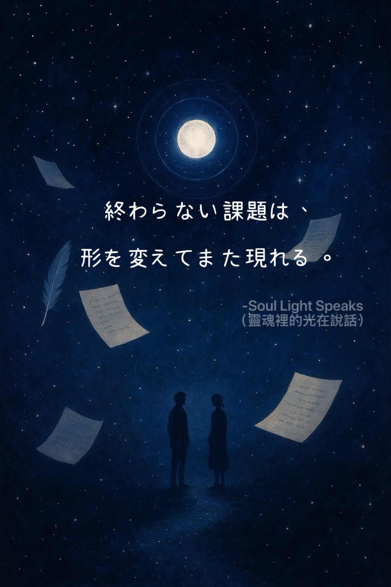
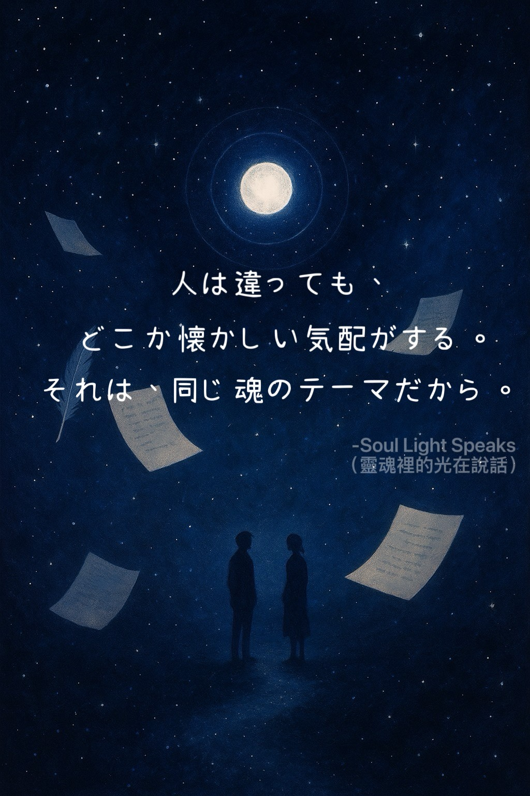
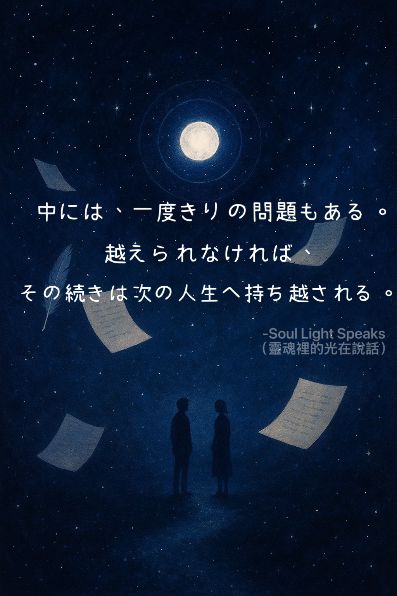
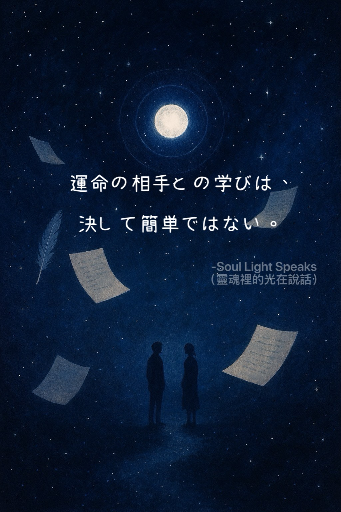
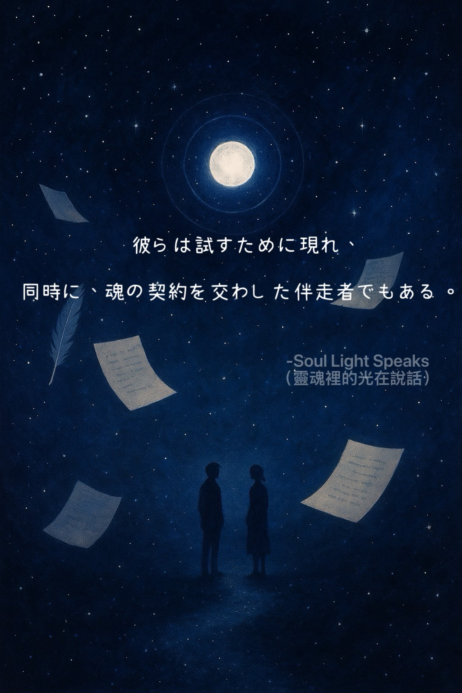

あなたは恋だと思ったけど、
それは魂のテストだった。
それは魂のテストだった。

終わらない課題は、
形を変えてまた現れる。
形を変えてまた現れる。

人は違っても、
どこか懐かしい気配がする。
それは、同じ魂のテーマだから。
どこか懐かしい気配がする。
それは、同じ魂のテーマだから。

運命の相手との学びは、
決して簡単ではない。
決して簡単ではない。

彼らは試すために現れ、
同時に、魂の契約を交わした伴走者でもある。
同時に、魂の契約を交わした伴走者でもある。

すべての出会いには、意味がある。
人生には、
決して偶然ではない
出会いがある。
その人は、
魂が学ぶべき問いを携えて、
あなたの前に現れる。
同じ課題は、
別の人を通して
再び訪れることがある。
まるで、
Aの課題とBの課題のように。
Aを乗り越えられなかったとしても、
宇宙が学びを終わらせるわけではない。
形を変え、
どこか魂の気配が似た人を通して、
もう一度、
同じ課題へと導いてくれる。
見た目も、
性格も、
歩んできた人生も違う。
それでも、
ともに過ごすうちに、
どこか懐かしい感覚。
何度も繰り返される感情。
ふと立ち止まり、
自分を見つめ直す瞬間。
そのすべてが、
同じ魂の課題を
静かに映し出している。
本当に変わるべきなのは、
相手ではない。
自分自身である。
ある人は、
あなたに練習する機会を与え、
ある人は、
あなたを成長へと導く。
どんな出会いにも、
必ず意味がある。
どんなご縁にも、
学びがある。
運命の相手との学びは、
恋愛だけでは終わらない。
そこには、
信頼。
責任。
受け入れること。
成長。
そして、
二人で人生を歩みながら
育まれていく学びがある。
人生に現れてくれた
すべての人に感謝を。
ある人は、
大切にすることを教えてくれる。
ある人は、
手放すことを教えてくれる。
ある人は、
あなたの世界を照らし、
ある人は、
まだ知らなかった
自分自身を映し出してくれる。
彼らは、
自分を映す鏡であり、
魂の成長を
共に歩む存在でもある。